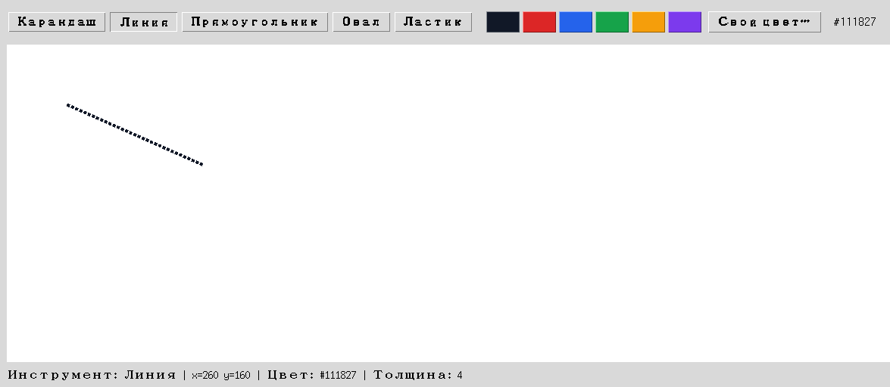

Глава 18 · Инструменты рисования
Инструмент «Линия»
Точка → пунктирный черновик, который обновляется на лету → финальная сплошная линия.
Линия — не то же самое, что карандаш
У карандаша нет заранее известного конца: штрих завершается там, где пользователь отпустит кнопку, и линия строится из множества маленьких отрезков «на лету». У инструмента «Линия» всё иначе — есть ровно ОДНА прямая от точки нажатия до точки отпускания, и до самого конца жеста она — только черновик, который может ещё много раз поменяться.
instrument_liniya.py
def on_press(self, event):
self.state.start_x, self.state.start_y = event.x, event.y
self.state.preview_id = self.canvas.create_line(
event.x, event.y, event.x, event.y,
fill=self.state.color, width=self.state.width, dash=(4, 2),
)
def on_drag(self, event):
self.canvas.coords(
self.state.preview_id,
self.state.start_x, self.state.start_y, event.x, event.y,
)
def on_release(self, event):
self.canvas.delete(self.state.preview_id)
self.canvas.create_line(
self.state.start_x, self.state.start_y, event.x, event.y,
fill=self.state.color, width=self.state.width,
)

dash=(4, 2) — визуальный сигнал «это ещё не финал»
Пунктир у превью — не техническое требование Canvas, а сознательный выбор: пользователь должен на глаз отличать черновую фигуру от готовой. Раздел 18.18 обобщает этот приём «создать превью → обновлять coords() → зафиксировать на release» для прямоугольника и овала — с линией он работает точно так же.
Практика: инструмент «Линия» с превью
Модуль tkinter открывает нативное окно Python — выполните локально в VS Code, PyCharm или Jupyter
Практика выполняется локально